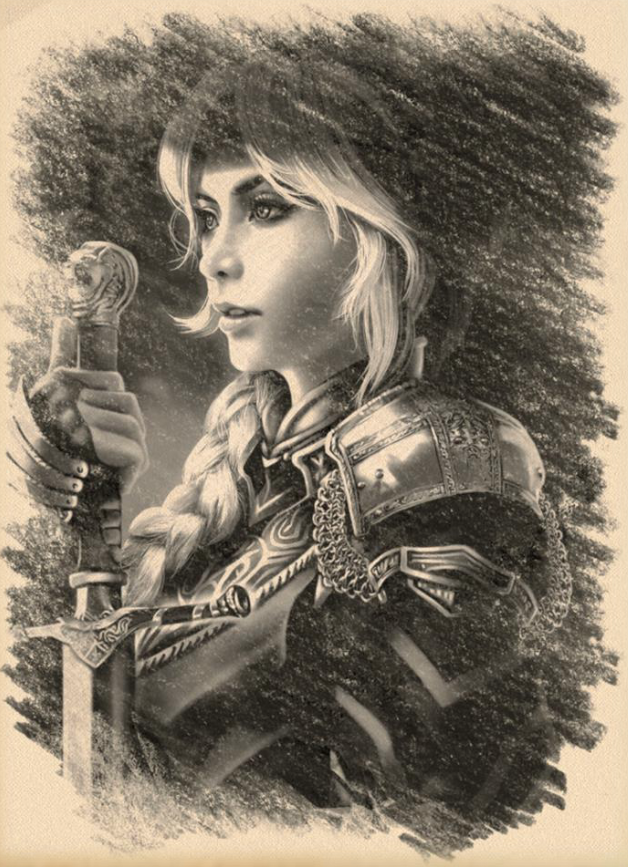

Gegenstände
Die Legende von Lugdana
Wo: Altes Handelshaus Wert: 100 Pf.

Waisenkind Lugdana
Der Legende nach war Lugdana ein Waisenkind, das von Graf Argynvost aufgenommen wurde, der sie wie seine eigene Tochter aufzog. Als Meister der Schlacht, der Taktik, des Schwertes und des Kampfes bildete er seine Tochter auf die einzige Weise aus, die er kannte. Sie lernte fleißig und wurde eine der besten Kämpferinnen, die er je gesehen hatte.
Lugdana Argynvost wird eine Ritterin
Als Graf Argynvost den Orden des Silbernen Drachen gründete, Ritter, die geschworen hatten, die Ländereien Barovias zu schützen, bat sie darum, die Ritterprüfung abzulegen, eine dreitägige Kampf- und Geschicklichkeitsprüfung, um in den Orden aufgenommen zu werden. Graf Argynvost zögerte, nicht wegen ihrer Fähigkeiten, denn er wusste, dass sie jede Prüfung, der sie sich stellte, bestehen würde, sondern aus Liebe zu ihr als seiner Tochter. Er fürchtete, da er ihren hartnäckigen Willen kannte, dass sie den Tod finden könnte, wenn sie Ritterin würde. Sie erinnerte Graf Argynvost freundlich daran, wie er sie schon oft belehrt hatte: "Wie man lebt, ist genauso wichtig wie wie man stirbt!" Natürlich bestand sie die Ritterprüfung und wurde als Dame Lugdana Argynvost in den Orden des Silbernen Drachen aufgenommen, als einzige Ritterin mit dem Nachnamen Argynvost.
Lugdanas Errungenschaften in Schlachten
Die junge Ritterin hatte sich in der Schlacht einen guten Ruf erworben, da sie niemals aufgab und sich immer wieder aufrichtete. Ihre Tapferkeit war bekannt, und sie meldete sich gerne zu jeder Schlacht, zog als Erste ihr Schwert und zog als Erste in den Kampf.
Lugdana und die Abtei in Krezk
Wenn die Schlachten nicht tobten, besuchte Lugdana die Abtei in Krezk und kümmerte sich freiwillig um ihre Mitritter, die Alten und Kranken. Sie wurde gut aufgenommen und kam in Kontakt mit Schwester Constance und der seligen Schwester Markovia der Abtei. Sogar die Gräfin von Habsburg respektierte sie und schenkte ihr Gehör, wann immer sie Lugdana in der Abtei sah.
Lugdana dient ihr Leben lang
Schwester Constance fragte einmal, warum Lugdana sich nicht ausruhte oder nach Argynvostholt zurückkehrte, denn sie habe so viel gedient und gegeben, sie verdiene eine Zeit der Ruhe. Lugdana sagte, dass sie nicht in der Lage sei, Frieden zu suchen, da der Feind die Völker Barovias belagert habe und die Kranken in Not seien. Sie sagte, ihr Leben sei nicht ihr eigenes, sondern sie diene dem Orden, bis sie dazu nicht mehr in der Lage sei oder sie falle. Ihr einziges Vergnügen war es, zu dienen.
Graf von Habsburg unterliegt gegen die Terg und die Ritter des Silbernen Drachen springen ein
Die Gezeiten hatten sich geändert, Graf von Habsburg und seine Ritter wurden in der Schlacht von Berez in der Dunkelheit vor dem Morgengrauen unehrenhaft ermordet, und so blieb es Graf Argynvost und den Rittern des Silbernen Drachens überlassen, das barovianische Militär im laufenden Krieg gegen die eindringenden Terg-Streitkräfte vor der Übermacht zu retten.
König Barov bittet Graf Argynvost um Hilfe, dieser kam aber nicht und König Barov wird in einer Falle ermordet, daher wird Graf Argynvost zum Verräter ernannt
Prinz Strahd von Zarovich, ein erfahrener Taktiker und General, traf mit seiner Armee ein, um Barovia gegen die Terg-Armeen zu verteidigen, die das Tal seit einem Vierteljahrhundert verwüstet hatten. Prinz Strahd machte keinen Hehl daraus, dass er Argynvost und seine Ritter zu Verrätern des Ordens erklärt hatte, weil sie sich geweigert hatten, seinem Vater zu Hilfe zu kommen, was doppelt verwerflich war, da sein Vater direkt nach der Weigerung in einer Falle ermordet worden war.
Graf Argynvost zieht sich zurück
Graf Argynvost zog sich zurück und bereitete sich darauf vor, eine schwere Belagerung gegen Prinz Strahd und die Terg abzuwehren. Wenigstens befand sich Argynvostholt in den Bergen, so dass er genügend Platz hatte, um den Feind zu erspähen und sich notfalls zurückziehen zu können.
Die Belagerung von Argynvostholt
Die Ritter des Silbernen Drachen kämpften nun gegen zwei Feinde, die Terg und die Armee von Prinz Strahd, die beide Argynvost und die Ritter des Silbernen Drachen vernichten und aus der Geschichte auslöschen wollten.
Der Schutz des Bernsteintempels
Entgegen jeglicher Logik hielt Argynvost seine Streitkräfte zwischen der Besatzung des Tsolenka-Passes und Argynvostholt aufgeteilt. Tsolenka verfügte über ein Heer von Truppen, darunter die Schildjungfrauen, musste aber um jeden Preis gehalten werden, da der Feind den Bernsteintempel nicht erreichen durfte.
Lugdana wird in der Schlacht am Rabenfluss schwer verletzt
In der Schlacht am Rabenfluss wurde Lugdana in einer Schlacht niedergeschlagen. Als sie sah, dass ihre Wunden schwer waren, deckte Argynvost ihre Flucht, damit ihre Knappen sie zur Pflege in die Abtei bringen konnten.
Untote Krieger
Schwester Constance sagte: "Jetzt hast du gedient und gut gedient, es ist an der Zeit, nach Hause zurückzukehren und Frieden zu suchen." Lugdana war verblüfft und sprach grimmig: "Das kann ich nicht tun, Schwester. Ein neuer Feind hat sich in Barovia offenbart, kleine Gruppen untoter Krieger, die ziellos durch die Lande ziehen, wie ein schauriger Spähtrupp für eine untote Armee." Sie erzählte Schwester Constance von deren Grausamkeit und machte sich Sorgen darüber, was mit den barovianischen Bauern geschehen würde, während Barovias militärische Kräfte mit dem Kampf gegen die Terg beschäftigt waren. Sie kämpfte jeden Tag um ihre Genesung und übertraf die Erwartungen der Hospitäler.
Lugdana betet in der Kapelle der Abtei
An dem Tag, an dem sie bereit war, auf das Schlachtfeld zurückzukehren, ging sie in die Kapelle der Abtei, um zu beten. Lugdana betete nicht für sich selbst, nicht für den Sieg, nicht für ihre Ritterbrüder, sondern dafür, dass ihr Leben, das sie im Dienste des Ordens verbrachte, um das Land von der Dunkelheit zu befreien, ganz Barovia Frieden bringen würde. Lugdana war nicht weise in der Pflege anderer, aber sie lernte, eine große Kämpferin zu werden, und so bestand ihr Dienst darin, diejenigen zu schützen, die sich nicht selbst schützen konnten. Die Worte ihres Vaters, Graf Argynvost, hallten in ihren Gedanken wider: "Wie wir leben, ist genauso wichtig wie die Art, wie wir sterben." Im Dienste des Volkes und des Friedens zu sterben, ist eine Ehre, die sie sehr schätzt.
Schwester Constance offenbart sich als Engel
Schwester Constance hörte Lugdanas Gebet, als sie im Schatten stand. Schwester Constance war ein Engel, der geschickt wurde, um über die Kranken zu wachen, da die medizinischen Ressourcen Barovias aufgrund des nicht enden wollenden Großen Krieges oft zu knapp bemessen waren. Als Lugdana sich erhob, um zu gehen, offenbarte Schwester Constance sich und ihr wahres Wesen. Schwester Constance schenkte Lugdana ein Amulett, das Heilige Symbol der Sonne.
Lugdana bekämpft die Untoten und wird eine Heldin
Lugdana trug das Heilige Symbol der Sonne mit Stolz und tötete unzählige Untote Skelett- und Zombiekrieger. Sie wurde im ganzen Tal als Heldin des Volkes, als Ritterin des Lichts, weit und breit bekannt.
Graf Strahds List mit der Hinrichtung der 100 Bürger von Vallaki
Graf Strahd wusste, dass er Lugdana erschlagen musste. Vor der Schlacht von Argynvostholt entführte Graf Strahd hundert Dorfbewohner von Vallaki und hielt sie als Geiseln fest. Graf Strahd würde sie im Austausch gegen Lugdana und einen Waffenstillstand freilassen, oder er würde jeden Morgen damit beginnen, einen nach dem anderen hinzurichten. Graf Strahd wusste, dass die Ritter niemals zustimmen würden und ihre Truppen zur Rettung der Dorfbewohner schicken würden. Lugdana wurde angewiesen, mit Graf Argynvost in Argynvostholt zu bleiben, während der Rest der verfügbaren Ritter die Rettung versuchte.
Graf Strahd schleicht sich in Argynvostholt ein und tötet Lugdana und Graf Argynvost
Graf Strahd kam an und schlich sich mitten in der Nacht persönlich nach Argynvostholt ein, tötete Lugdana im Schlaf und besiegte anschließend Graf Argynvost.
Der Verbleib des Heiligen Symbol der Sonne
Graf Strahd suchte vergeblich, fand aber das Heilige Symbol der Sonne nicht, denn es war verschwunden. Im Zorn entweihte er Graf Argynvosts Leiche, stahl seinen Schädel und nahm ihn als Beute mit in sein Schloss. Es heißt, dass das Amulett nach Lugdanas Tod zu Schwester Constance zurückkehrte.

Lugdanas Geist
Ihr Geist bleibt beständig, um denen zu dienen, die dem Orden dienen, die Kranken zu schützen und die Dunkelheit zu besiegen. Oft hört man eine geflüsterte Stimme, die die Abtei und Argynvostholt heimsucht: "Graf Strahd muss sterben!" Viele glauben, dass es Lugdanas Seele ist, die aus Protest gegen den verräterischen Tod ihres Vaters und ihrer selbst durch die üble Hand des Dunklen Grafen schreit. Andere glauben, dass sie zu einer Wiedergängerin geworden ist, die Untote jagt, wie sie es zu Lebzeiten getan hat.
KI-Zusammenfassung
Die Legende von Lugdana ist ein Gegenstand im Besitz der Gruppe, bei Malduk. Die lokalen Notizen halten dazu fest: Wo: Altes Handelshaus Wert: 100 Pf. Der Legende nach war Lugdana ein Waisenkind, das von Graf Argynvost aufgenommen wurde, der sie wie seine eigene Tochter aufzog. Als Meister der Schlacht, der Taktik... Als Graf Argynvost den Orden des Silbernen Drachen gründete, Ritter, die geschworen hatten, die Ländereien Barovias zu schützen, bat sie darum, die Ritterprüfung abzulegen... Direkte Bezüge bestehen zu Altes Handelshaus, Lugdana, Graf Argynvost, Lugdana Argynvost, Orden des Silbernen Drachen. Die Legende von Lugdana wird außerdem in Schwester Constance, Graf von Habsburg, Gräfin von Habsburg, Altes Handelshaus, Tsolenka erwähnt. Diese Zusammenfassung folgt ausschließlich den vorhandenen Notizen und ergänzt keine neuen Fakten.